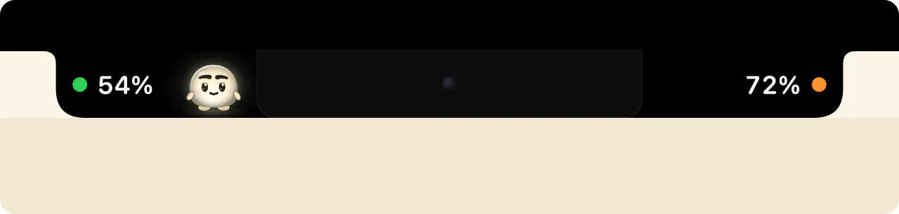
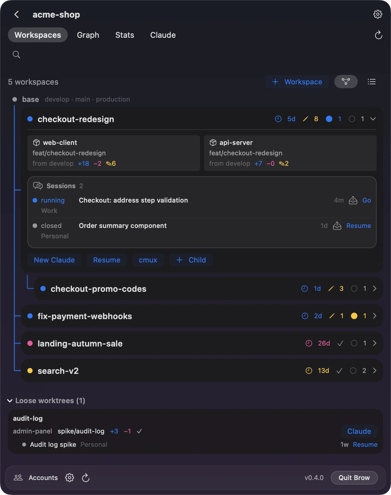
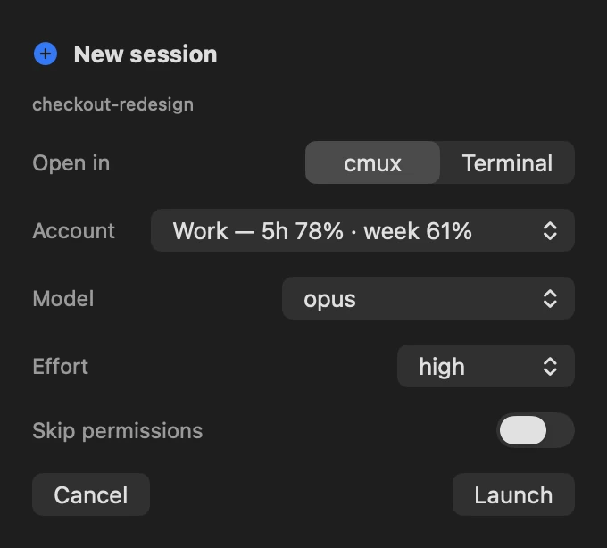

Claude Code usage limits for every account, in the MacBook notch
Brow is a free, open-source macOS app that shows the 5-hour limit, the weekly limit and any model-specific weekly limit of each Claude Code account, as percent used, and when each one resets. It works with one account, which it finds in ~/.claude by itself, or with several. And Workspaces, in the menu bar, runs parallel Claude Code sessions on a product split across several repositories.
Download Brow Source on GitHub
Or with Homebrew: brew install --cask efim0v/tap/brow

Which Claude account has room, and when each limit resets
With several accounts, Brow shows at a glance which one is close to its limit, which has room, and when each one frees up.
Reset times and a reset calendar
Each limit shows when it resets: within a day as a countdown, “resets in 3 h 12 min”, and further out as a date and time, “resets 22 Sep 02:00”.
The calendar marks every account’s weekly resets and estimated subscription renewals. Point at a day to see what frees up.

Sign in again in that account’s own browser profile
When an account’s sign-in expires, one click next to it starts claude auth login for that account and opens the browser profile that belongs to it, already signed in to that account. Other accounts stay signed in.

Two numbers beside the notch, or a pill on other displays
Collapsed, Brow shows how much of the 5-hour limit and of the weekly limit is used across your accounts. The dot beside each number turns orange at 70% and red at 90%. Hover and the panel opens.
The readouts can also sit in a strip below the notch. On a display without a notch, Brow shows a pill instead.

Every account in Settings
Settings → Accounts lists each account with its email, tier, folder, token state and launch command. Sign in… adds another account: Brow creates the folder and opens Anthropic’s own sign-in in Terminal.

Glim, a small pet that eats your limits
Glim lives in the black beside the 5-hour readout and eats what your accounts use. When the 5-hour number goes up, a bead of light pops out of it, flies to Glim and is eaten. The number stays as it was.
Its glow is its hunger meter
Fed, Glim glows bright; hungry, its light dims. Hours at the Mac without Claude Code make it hungry, and a hungry Glim looks hopeful, never sad.
Step away for ten minutes and it dozes off. It never gets hungry while you are gone.

- A used-up limit is a nap
- When the 5-hour limit is used up, Glim falls asleep full until the window resets. When the weekly limit is used up, it hides in its den behind the camera and comes out at the weekly reset.
- It comes into the panel with you
- Hover the notch and Glim hops into the panel’s header, next to its state, its last meal and a hunger meter. Its eyes follow the pointer, and a click on it boops it.
- It stays out of the way
- Glim never covers a number, makes no sound and sends no notification. It draws only while you can see it, and it follows Reduce Motion. It is on by default; Settings → General → Show the pet turns it off.
- It keeps to itself
- Glim sends nothing anywhere and reads no transcripts. To perk up when you start Claude Code, it has macOS tell it when an account’s
history.jsonlis written, and it never opens the file.
What Brow does for each account
- Every account at a glance
- For each account: the 5-hour limit, the weekly limit and any model-specific weekly limit, as percent used, with the time until each resets.
- A reset calendar
- Weekly resets and estimated subscription renewals on a month grid, so you can see which account frees up when.
- Limit warnings
- Turn them on and Brow posts a macOS notification when an account passes 80% and 95% of a limit, once per level until it resets. Off by default.
- Copy my week
- One button copies a picture of your limits, ready to paste into a chat or a post. Accounts are numbered unless you choose to show their names, and emails never appear.
- Copy the launch command
- One button copies the command that starts Claude Code as that account.
- Sign in again, in that account’s own browser
- Each account gets a separate browser profile, with its own cookies, history and saved logins, so signing in to one never disturbs another. A second button opens that profile directly.
- Add an account in one click
- Brow creates the account folder and opens Anthropic’s own sign-in flow.
- Tokens kept fresh
- Idle accounts are refreshed in the background, so the numbers do not go stale. An account a Claude Code session is using is left to that session, which refreshes its own token.
- Checked every 30 seconds
- Brow checks the limits every 30 seconds, again when the Mac wakes or the network comes back, and on hover when the numbers on screen are older than 30 seconds. The panel says how old they are.
Separate browser profiles need Google Chrome, Chromium, Brave or Edge. Without one of them, links open in your default browser, with no isolation. More on pacing, refresh and layout options is in Brow in detail.
Several Claude Code accounts on one Mac
Claude Code keeps each account in its own configuration folder: ~/.claude for the default account, and any other folder you point CLAUDE_CONFIG_DIR at. Anthropic’s documentation describes this as the way to stay signed in to several accounts at once, such as a work and a personal one.
Brow reads ~/.claude and every folder in ~/.claude-accounts/. In Settings → Accounts, Sign in… creates the next free folder, ~/.claude-accounts/account-N, and starts claude auth login for it in Terminal; Existing folder… adds a folder you already use. Each account then has a button that copies its launch command, such as CLAUDE_CONFIG_DIR='…' BROWSER='…' claude, so Claude Code starts as that account and opens links in that account’s browser profile.
Each folder keeps its own sign-in. Claude Code stores it in the macOS Keychain under a name tied to the folder: Claude Code-credentials for ~/.claude, Claude Code-credentials-<hash> for any other folder. Check Anthropic’s Consumer Terms for your plans.
Step by step: Use multiple Claude Code accounts on one Mac. When one account runs out, Workspaces carries a session over to another: Continue a Claude Code session on another account.
How Brow compares with /usage, ccusage and menu-bar trackers
There are several ways to see Claude Code usage. The first three rows come from Anthropic’s documentation, the others from each tool’s own site or README.
| Tool | What it shows | Where it lives | Several Claude accounts at once | Other providers | Platforms | Licence, price |
|---|---|---|---|---|---|---|
/usage in Claude Code |
Plan usage bars for the signed-in account | Inside Claude Code | No: the account the session runs as | — | Wherever Claude Code runs | Part of Claude Code |
| claude.ai Settings → Usage | Usage of the signed-in account | Web, Claude Desktop | No | — | Browser, Claude Desktop | Part of Claude |
Status line rate_limits |
5-hour and 7-day percent used and reset time, for your own status-line script; Pro and Max only | Claude Code status line | No: the session’s account | — | Wherever Claude Code runs | Part of Claude Code |
| ccusage | Token usage and estimated cost from local usage logs | Terminal | Not stated | Codex, OpenCode, Gemini CLI and others | Not stated | MIT, free |
| Claude Code Usage Monitor | Terminal monitor of tokens, messages and cost, with predictions | Terminal | Scans several config folders; no side-by-side view described | Not stated | Python 3.9+; install commands for macOS, Linux and Windows | MIT, free |
| CodexBar | Usage windows, credits, costs and resets per provider | macOS menu bar, plus a CLI and widgets | Not stated | Many, including Codex, Cursor and Gemini | macOS 14+; the CLI also on Linux | MIT, free |
| Claude Tracker | Claude 5-hour, weekly and per-model usage; threshold notifications | Menu bar, plus a HUD at the notch | Yes, “every account at once” | Not stated | macOS 14+, Apple silicon and Intel | MIT, free |
| Usage4Claude | Claude and Codex 5-hour, weekly and extra usage; notifications | Menu bar | Several accounts, switched from the menu bar | Codex | macOS 13+, Intel and Apple silicon | MIT, free |
| ClaudeBar | Quotas of many AI coding tools; notifications at warning levels and resets | Menu bar | Not stated | Many, including Codex, Gemini and Copilot | macOS 15+ | Apache-2.0, free |
| Brow | 5-hour, weekly and model-specific weekly limits per account; reset times; a reset calendar; a browser profile per account; limit warnings | Beside the MacBook notch; a pill on other displays | Yes, side by side | Claude only | macOS 26+, Apple silicon | GPL-3.0, free |
Checked on . “Not stated” means the tool’s own page does not say. Claude Tracker is the new name of Claude Usage Tracker.
- Want the numbers inside Claude Code:
/usage, or a status-line script on Pro and Max. - Want token and cost reports: ccusage.
- Want a terminal dashboard with predictions: Claude Code Usage Monitor.
- Use Codex, Gemini or other providers too: CodexBar or ClaudeBar.
- Need an Intel Mac or an older macOS: Usage4Claude (macOS 13+) or Claude Tracker (macOS 14+).
- Want several Claude accounts side by side at the notch, with a reset calendar and a browser profile per account: Brow.
Brow’s own limits: it covers Claude only; it needs macOS 26 or later, and the prebuilt app is Apple silicon only; and the build is not notarized, so the first launch needs Open Anyway.
Workspaces: parallel Claude Code sessions across several repositories
Brow tells you which account has room; Workspaces moves the work there. It is the menu-bar half of Brow: Grove, which used to be a separate app, is now part of it.
Claude Code works best when it sees the whole product in one folder. When the product is split across repositories, parallel sessions trip over branches: one checks out a branch in the server repository, and another, working on a different feature, is suddenly looking at the wrong code. Workspaces gives each feature a folder of its own, with a git worktree of each repository you pick, all on one branch. Claude Code starts there and sees the whole product, and no session can switch the branch under another.
One branch across every repository
A new workspace takes a name and a click. Brow runs git worktree add in each repository, names the branch from your template, feat/{name} by default, seeds shared files such as CLAUDE.md and runs the post-create hooks you set. A workspace can fork from another one, and each shows its branches, its uncommitted changes and its Claude Code sessions.
The Graph and Stats tabs show each repository’s commit graph and the lines of code across the project.

Move a session to the account with room
Resume as… continues a session under another account without copying it. Migrate to… copies it in full, even into an account that is in use. Share makes it visible to every linked account.
Every account picker shows that account’s 5-hour and weekly use as the notch last read it, under the name you gave it in Settings → Accounts.

- Where to find it
- Brow’s item in the menu bar, the notch with two dots, or the button with stacked squares in the notch panel. Workspaces stays off until you use it: open Settings → Workspaces, or press that button and choose Add project….
- The
browcommand-line tool scan,workspaces,sessions,create,graphanddoctor, each with--json. Install it withbrew install efim0v/tap/brow-cli. It keepsgroveas a second name, so scripts written for Grove’s tool work unchanged.- cmux or Terminal.app
- Sessions open in cmux, which is recommended, or, from the launch sheet, in Terminal.app. A workspace is an ordinary folder, so you can also start Claude Code in it from any terminal.
- Coming from Grove
- Brow finds your Grove projects, accounts and settings and runs them in Workspaces. Quit Grove.app first: while it runs, Workspaces waits. What changes.
Step by step: Run Claude Code across multiple repositories and Continue a Claude Code session on another account. More in Workspaces in detail.
Install Brow on your Mac
-
Install Brow
With Homebrew:
brew install --cask efim0v/tap/browOr download Brow.zip from the latest release, unzip it and move
Brow.appto/Applications.The
browcommand-line tool installs withbrew install efim0v/tap/brow-cli, or comes asbrow-cli.zipin the same release. Either way you also getgrove, a second name for the same tool. -
Allow the first launch
The build is signed ad hoc and is not notarized by Apple, so macOS blocks the first launch, whichever way you installed it.
Open System Settings → Privacy & Security, find the message about Brow under Security and click Open Anyway, then confirm with your login password. The button is there for about an hour after the blocked launch.
-
Find it in the notch
Brow has no Dock icon: hover the notch to open the panel. The ⚙ in the panel opens Settings, and Launch at login is in Settings → General.
If macOS withholds an account’s Keychain item, that account shows an orange key. Click it and choose Always Allow.
To start using Workspaces, open Settings → Workspaces, or press the button with stacked squares in the notch panel and choose Add project….
Brow is licensed under the GNU GPL v3; version 0.2.0 and earlier were released under the MIT License. The source, the releases and the issue tracker are on GitHub.
What Brow does on your machine
- Your token, read from the Keychain
- Brow reads each account’s Claude Code sign-in token from the macOS Keychain and uses it only to call Anthropic’s usage and profile endpoints on
api.anthropic.com. Those endpoints are not a documented public API and may change. - No analytics, no update check
- No token is written to disk or logged, and nothing is sent anywhere else.
- The fallback token refresh is on by default
- If the normal refresh stops working, Brow runs a tiny
claude -prequest, which spends a little limit and starts that account’s 5-hour window. Turn it off in Settings → Accounts. - One browser profile per account
- Each is a separate directory under
~/Library/Application Support/Brow/browser-profiles/. Brow sets the profile’s name and allows third-party cookies in it so that sign-in works. - Signing in opens Terminal
- Sign-in runs
claude auth loginin Terminal, and macOS asks once for permission to control it. - Settings and readings on disk
- Brow keeps its settings and the last readings in
~/Library/Application Support/Brow. It also keeps a pacing record for the usage endpoint, with each account’s last reading, in~/Library/Application Support/Grove/oauth-usage-ledger.json; that folder is Grove’s, which is now part of Brow. - Glim notices prompts without reading them
- With Glim on, Brow asks macOS to tell it when each account’s
history.jsonlis written, so Glim can perk up when you start Claude Code. It never reads the file. Glim’s own state, such as its hunger and the days it was fed, is in~/Library/Application Support/Brow/pet.json. - Workspaces, only once you turn it on
- It edits an account’s
settings.jsononly if you turn on status-line capture for that account, runs git in your repositories, drives cmux, and keeps a transcript safety net only if you turn that on. The README lists all of it.
Brow is an independent tool, not affiliated with or endorsed by Anthropic.
Questions about Brow and Claude Code limits
How do I check my Claude Code usage limits?
In Claude Code, run /usage; Pro and Max subscribers see their plan usage bars there. On claude.ai or in Claude Desktop, open Settings → Usage. Both show the account you are signed in to. Brow shows every account at once, with each limit and when it resets.
When does the Claude weekly limit reset, and on which day?
Weekly limits reset once every week, on the account’s usual day and time. Brow shows each account’s next reset as a countdown when it is less than a day away, and otherwise as a date and time, for example “resets 22 Sep 02:00”. The reset calendar puts every account’s weekly resets on one month grid.
How does the 5-hour limit work?
Paid plans have a session limit that resets every five hours. Brow shows how much of it each account has used and how long until it resets.
What does “You’ve hit your session limit” mean?
Claude Code shows it when an account has used up its usage window. The message says when the window resets, and switching models with /model does not restore access. “You’ve hit your weekly limit” works the same way. Brow shows which of your other accounts still has room, and one click copies the command that starts Claude Code as that account.
Can I see the limits of several Claude Code accounts at once?
Yes. Brow reads ~/.claude and every folder in ~/.claude-accounts/, and shows each account’s limits side by side. Claude Code keeps each account in its own configuration folder, chosen with CLAUDE_CONFIG_DIR; see Use multiple Claude Code accounts on one Mac.
Can I continue a Claude Code session under another account?
Yes, with Workspaces. Resume as… continues it under another account without copying it, Migrate to… makes a full copy, and Share moves it into a store that every linked account can see. Brow refuses a move that would give a session two writers. Step by step: Continue a Claude Code session on another account.
Can Claude Code work on several repositories at once?
--add-dir gives a session more directories, on whatever branch each checkout is on. A workspace puts a git worktree of each repository, all on the feature’s branch, under the folder Claude Code starts in, so parallel sessions never switch each other’s branches. Claude Code’s own --worktree covers the one repository you run it in. Guide: Run Claude Code across multiple repositories.
Does Brow use up my limits?
Only through the fallback token refresh, and you can turn that off. Reading the limits is a request to Anthropic’s usage endpoint, not to a model. An idle account’s token is kept fresh with claude doctor, which makes no model call.
The fallback is on by default. When a token has 30 minutes or less left and claude doctor did not renew it, Brow runs a one-turn claude -p request on Haiku. That spends a sliver of the account’s limit and starts its 5-hour window. It runs at most once every 30 minutes per account. Settings → Accounts → Allow claude -p fallback turns it off.
Is Brow a menu bar app? Does it work without a notch?
Brow has no Dock icon. The limits sit at the top of the main display: on a MacBook with a notch, two readouts beside the notch or in a strip below it; on a display without a notch, such as an external one, a pill at the top centre. Workspaces, once you turn it on, has an item in the menu bar. If you use Brow for Workspaces only, Settings → General turns the notch off.
Why don’t I see Brow’s item in the menu bar?
On a MacBook with a notch, macOS hides the menu-bar items that don’t fit beside it. Workspaces still opens from the button with stacked squares in the notch panel, from Show Workspaces in Brow’s menu while its Settings window is in front, and when you open Brow again from Finder or Spotlight. Settings → General → Show Workspaces in the menu bar turns the item off altogether.
Does Brow send notifications?
Yes, if you turn them on in Settings → General → Notifications: Brow posts a macOS notification when an account passes 80% and 95% of its 5-hour or weekly limit, once per level until the limit resets. The levels can be changed. The dot next to each readout also turns orange at 70% and red at 90%.
Is there a desktop widget?
No. Brow lives at the notch, or in a pill on other displays: hover it to open the panel.
Does Glim use much battery?
It draws only while the screen is on and you are at the Mac: 30 frames a second at rest, 60 to 120 for a second or two while it eats or moves, and nothing when the screen is locked or asleep, when you have been away for ten minutes, or when Glim is off. It follows Reduce Motion.
How often does Brow update the numbers?
It checks them every 30 seconds, again on wake and when the network returns, and on hover when the numbers on screen are older than 30 seconds. Anthropic’s usage endpoint is rate-limited, so a check that comes too soon reuses the last reading. The panel shows how old the numbers are.
Is Brow free and open source?
Yes. Brow is free, and its source is on GitHub under the GNU GPL v3. Version 0.2.0 and earlier were released under the MIT License.
Where does Brow read my token, and does anything leave my Mac?
From the Keychain item Claude Code keeps for each account folder, or from .credentials.json in that folder when Claude Code keeps the sign-in there. Brow uses the access token only and leaves renewing it to Claude Code.
Brow’s own requests go to api.anthropic.com/api/oauth/usage and, about once a day per account, api.anthropic.com/api/oauth/profile, and nowhere else. It has no analytics and no update check, and Workspaces makes no network requests of its own. The claude and git commands Brow runs make their usual connections, and the browser profiles open claude.ai.
How is Brow different from ccusage or /usage?
/usage shows the plan usage of the account the session runs as. ccusage reports token usage and estimated cost from local usage logs. Brow shows the limits Anthropic reports for every account, side by side, with reset times and a calendar.
My Claude Code login expired. How do I sign in to the right account?
When a stored login cannot be refreshed, Claude Code reports “Login expired · Please run /login”. In Brow, the sign-in button next to that account runs claude auth login for it. It also opens the browser profile that belongs to that account, so the sign-in lands in the right account. Other accounts stay signed in.
Which Macs does Brow run on?
macOS 26 or later; the prebuilt app is Apple silicon only. The notch layout is for MacBooks with a notch; other displays show a pill.
Is Brow made by Anthropic?
No. Brow is made by Artem Efimov and is not affiliated with or endorsed by Anthropic.